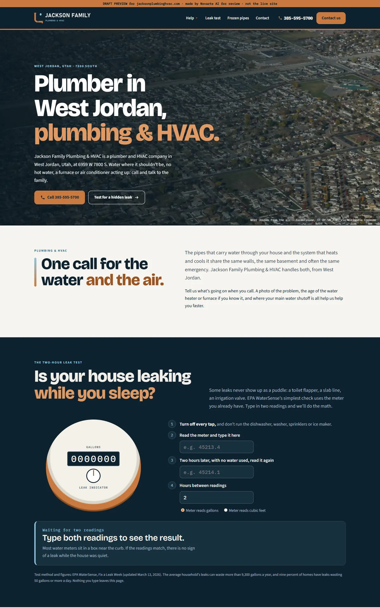
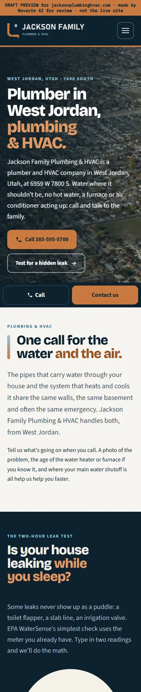

Start with the report to see what was wrong, then what we fixed, then the before-and-after. When you're ready, open the new website. Nothing here is live.
The website plan report from the 5 Oct 2026 audit. It's the reason behind most of the changes below.
Jackson Family Plumbing & HVAC · West Jordan · Website down or broken · Prepared 21 Oct 2026. Listing facts from 15 Oct 2026; audit and search numbers from 21 Oct 2026. Draft for Angelo's review.
plumber west jordan. Searches across Utah: 170 for “plumber west jordan”, 8,100 for “plumber near me”.Check with Angelo first
Tell Angelo: the site's title says "Colorado 24/7 Plumbing Call". It does not match this Utah business.
Not a client yet. Do not contact this business. This report is for planning only. Nothing goes to them unless Angelo says so.
From the Google listing (pulled 15 Oct 2026). Confirm with the client before it goes on a site. Name, address and phone are copied exactly as given; do not reformat them.
plumber west jordanplumbing company west jordan, plumbing services west jordan| # | Service | Target keyword | With the city | "Near me" | + "utah" | Now |
|---|---|---|---|---|---|---|
| 1 | Drain cleaning | drain cleaning west jordan | 10 | 1,900 | 40 | Ask client |
| 2 | Emergency plumber | emergency plumber west jordan | – | 1,600 | 10 | Ask client |
| 3 | Water heater repair | water heater repair west jordan | 10 | 1,300 | 10 | Ask client |
| 4 | Sewer line repair | sewer line repair west jordan | 10 | 880 | 10 | Ask client |
| 5 | Water heater installation | water heater installation west jordan | – | 590 | 10 | Ask client |
| 6 | Hydro jetting | hydro jetting west jordan | – | 210 | 10 | Ask client |
| 7 | Repipe | repipe west jordan | – | 210 | 10 | Ask client |
| 8 | Leak detection | leak detection west jordan | – | 170 | 110 | Ask client |
| 9 | Excavation | excavation west jordan | – | 140 | 20 | Ask client |
| 10 | Sewer camera inspection | sewer camera inspection west jordan | – | 90 | – | Ask client |
Monthly searches across Utah. "–" = fewer than 10 a month. One page per service. Only build a page if the business really does that service.
| Keyword | All Utah | + "utah" | With city | All Utah |
|---|---|---|---|---|
| water heater replacement cost | 390 | 30 | water heater replacement cost salt lake city | – |
| sewer line replacement cost | 50 | – | sewer line replacement cost salt lake city | – |
| plumber cost | 30 | – | plumber cost salt lake city | – |
One cost page covering these. Cost searchers are close to buying. Use only real prices from the client.
| City | Keyword 1 | All Utah | Keyword 2 | All Utah |
|---|---|---|---|---|
| Salt Lake City | plumber salt lake city | 1,600 | drain cleaning salt lake city | 90 |
| Sandy | plumber sandy | 210 | drain cleaning sandy | 10 |
| Lehi | plumber lehi | 210 | drain cleaning lehi | 10 |
| Midvale | plumber midvale | 170 | drain cleaning midvale | 10 |
Build a city page only if the business really works there, with real local content.
| Keyword | Avg. words (top pages) | Have FAQ | Show prices |
|---|---|---|---|
| plumber west jordan | ~2,385 | 2 of 3 | 1 of 3 |
| drain cleaning west jordan | ~2,054 | 3 of 3 | 3 of 3 |
Use competitor headings for topic ideas only. Do not copy them. Some name other companies, people or prices.
| Search | Use? | Where |
|---|---|---|
| Plumber west jordan residential | Yes | Matching service page, as a section |
| Cheap plumber west jordan | If true | Only with real offers from the client |
| Best plumber west jordan | Show, don't claim | Real reviews, photos and process. Never claim "the best". |
| 24 hour plumber west jordan | Yes | Matching service page, as a section |
| Any Hour plumbing | Skip | Looks like a company's name |
| Plumbers West Jordan | Skip | Looks like a company's name |
| Cheap drain cleaning west jordan | If true | Only with real offers from the client |
| Question | Use? | Where |
|---|---|---|
| Is West Jordan a wealthy area? | Yes | Matching service page |
| What is the average cost to replace a water heater in Utah? | Real prices only | Cost page |
| Who are some famous people from West Jordan, Utah? | Skip as written | Cover the intent on the home page (reviews, why choose us) |
| What is the most common plumbing service call? | Yes | Matching service page |
| How much does a main line drain cleaning cost? | Real prices only | Cost page |
| How do plumbers clean drains? | Yes | Matching service page |
Search numbers: Google Ads monthly searches across Utah, pulled 21 Oct 2026. "–" means fewer than 10 a month. Questions and page topics: live Google results in West Jordan, 21 Oct 2026.
Only after Angelo signs them up. Do not contact them now.
Each problem from the report or the site review, and what the new site does about it.
| Problem | What we did | Status |
|---|---|---|
| Not a client yet | Draft only. Do not contact this business. | Needs Angelo |
| Live page is a "Colorado 24/7 Plumbing Call" template: no phone, broken images, Colorado text | Rebuilt from the Google listing only: name, West Jordan address and phone, copied exactly. Archive captures back to 2024 are the same template, so there was nothing else to recover | Fixed |
| Home target "plumber west jordan"; no tap-to-call; no page names West Jordan | Title, H1 and first sentence name a plumber in West Jordan; tap-to-call everywhere; Plumber schema | Fixed |
| Nothing true to say beyond the listing | Signature: EPA WaterSense two-hour water-meter leak test, as a working calculator; a frozen-pipe checklist from IBHS, USU Extension and the NWS | Fixed |
| Claims on the live page | "#1 Ranked", "Licensed, Bonded, Insured" and the Milliken, CO service area left out until confirmed | Needs client |
| No services, hours, photos or story | Not invented. Home is lean (630 words) until the client supplies services, hours and photos | Needs client |
| No blog | A new 1,175-word post on keeping pipes from freezing (IBHS, USU Extension, NWS) | Fixed |
The home page, old site on the left and the new design on the right. Screenshots from 16 to 17 Oct 2026.


Jump straight into key pages of the new site. Use the browser back button to come back here.
These need answers before the site goes live. Full details are in the notes file in OUTBOX.